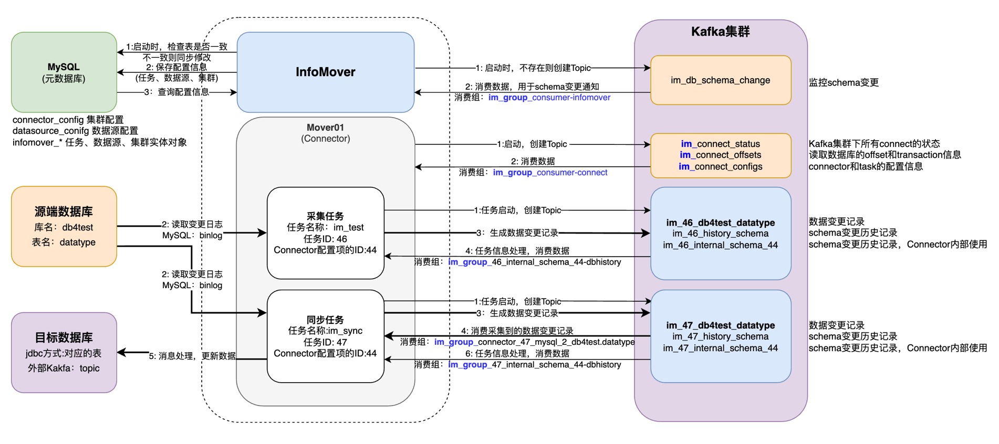

# Kafka集群对接授权操作
# InfoMover与Kafka交互
涉及Kafka集群环节说明：

# Kafka资源授权
# Kafka 创建用户
| # 1. Kafka 创建用户 bin/kafka-configs.sh --zookeeper zookeeper-node:2181 --alter --add-config 'SCRAM-SHA-256=[password=password],SCRAM-SHA-512=[password=password]' --entity-type users --entity-name infomover |
|---|
# cluster资源授权
授权原因：涉及查看cluster资源配置的操作，需分配cluster资源相关权限
涉及操作：
（1）Describe
（2）DescribeConfigs
| # 2. 授权，资源类型cluster ### 参考命令 bin/kafka-acls.sh --authorizer-properties zookeeper.connect=zookeeper-node:2181 \ --add --allow-principal User:infomover \ --operation Describe --operation DescribeConfigs \ --cluster |
|---|
# Topic资源授权
授权原因：涉及Topic创建、读写、配置查看、分区配置操作，删除操作涉及删除任务时删除任务相关的Topic、重新采集时通过DeleteRecords的API进行offset重置。
涉及操作：
（1）Create
（2）Read
（3）Write
（4）Describe
（5）DescribeConfigs
（6）Alter
（7）AlterConfigs
（8）Delete
Topic说明：
（1）任务执行使用配置类的Topic，以 im_connect 为前缀
im_connect_configs
im_connect_offsets
im_connect_status
（2）任务数据类Topic，以 im_ 为前缀
im_{任务ID}_history_schema # 样例：im_164753_history_schema
im_{任务ID}internal_schema{Connector配置ID} # 样例：im_164753_internal_schema_44
im_{任务ID}{库名}{表名} # 样例：im_164753_datayes_fst_detail
| # 3. Topic操作 ### 参考命令 bin/kafka-acls.sh --authorizer-properties zookeeper.connect=zookeeper-node:2181 \ --add --allow-principal User:infomover \ --operation Create \ --operation Read \ --operation Write \ --operation Describe --operation DescribeConfigs \ --operation Alter --operation AlterConfigs \ --operation Delete \ --topic im_ --resource-pattern-type prefixed # 前缀匹配 |
|---|
# Group消费组
授权原因：涉及消费数据的环节包括任务运行信息处理、同步任务进行数据消费。
涉及操作：
（1）Describe
（2）Read
group.id（程序参数文件控制）:
（1）Mover使用： im_group_connect-cluster
（2）Consumer使用： im_group_consumer-connect
（3）主程序使用： im_group_consumer-infomover
（4）任务运行使用： im_group*
在消费时指定消费组，Consumer由Kafka自动分配。
| # 4. Group消费组 ### 参考命令 bin/kafka-acls.sh --authorizer-properties zookeeper.connect=zookeeper-node:2181 \ --add --allow-principal User:infomover \ --operation Describe --operation Read \ --group im_group --resource-pattern-type prefixed # 前缀匹配 |
|---|
← 目标端数据库对接授权说明 问题解决方案 →